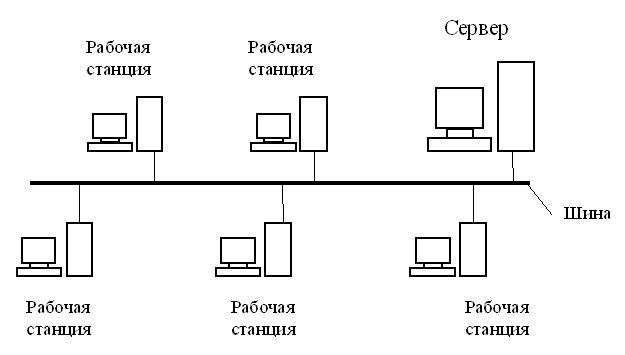

Шина
При топологии типа общая шина все клиенты подключены к общему каналу передачи данных. При этом они могут непосредственно вступать в контакт с любым компьютером, имеющимся в сети.

Передача информации в данной сети происходит следующим образом. Данные в виде электрических сигналов передаются всем компьютерам сети. Однако информацию принимает только тот компьютер, адрес которого соответствует адресу получателя. Причем в каждый момент времени только один компьютер может вести передачу данных.
Преимущества топологии общая шина:
- Вся информация находится в сети и доступна каждому компьютеру.
- Рабочие станции можно подключать независимо друг от друга. Т.е. при подключении нового абонента нет необходимости останавливать передачу информации в сети.
- Построение сетей на основе топологии общая шина обходится дешевле, так как отсутствуют затраты на прокладку дополнительных линий при подключении нового клиента.
- Сеть обладает высокой надежностью, т.к. работоспособность сети не зависит от работоспособности отдельных компьютеров.
К недостаткам топологии типа общая шина относятся:
- Низкая скорость передачи данных, т.к. вся информация циркулирует по одному каналу (шине).
- Быстродействие сети зависит от числа подключенных компьютеров. Чем больше компьютеров подключено к сети, тем медленнее идет передача информации от одного компьютера к другому.
- Для сетей, построенных на основе данной топологии, характерна низкая безопасность, так как информация на каждом компьютере может быть доступна с любого другого компьютера.